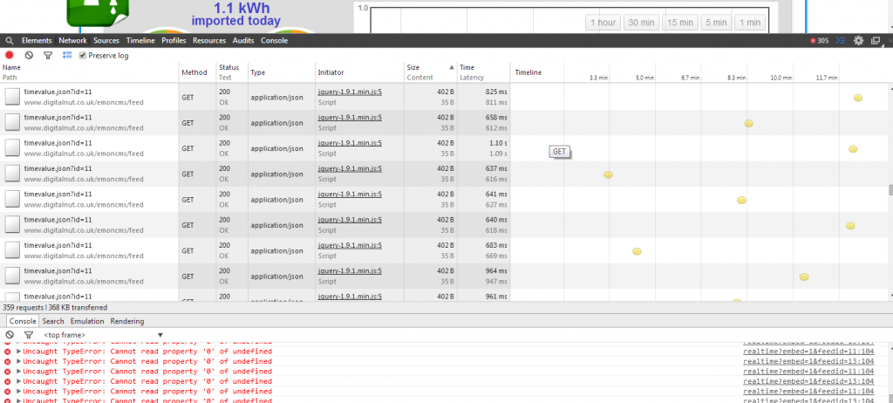

I keep getting a reoccurring issue where the graphs in my Dashboard are completely blank, and all I can see is the graph axis, with no data content. It's happened numerous times, but seems intermittent, and has occurred for the past few weeks.
I've loaded the dashboard using Chrome Developer Tools, and below is a screen shot of the error report, and think it's originating from the file / Modules / vis / visualisations / realtime.php
The feeds 11 & 13 are both Timestore feeds, and appear to be recording data correctly - (Raw Data graphs from Feeds page are OK).
Paul
Re: Blank Graphs - v8.2.6 [SORTED]
Hello Paul, thanks for the screen, I wonder if you could look under the 'Network' tab when this error occurs and then the response, I've attached a screen of what it should look like, I wonder how it differs?
Re: Blank Graphs - v8.2.6 [SORTED]
Hi Trystan, here is a screenshot of the Network tab.

Re: Blank Graphs - v8.2.6 [SORTED]
I've found that by Editing the dashboard, select Configure the affected graphs, and Save Changes (without making any), the error clears and graphs display OK again, and all is well.
I've done this three times now over the past couple of weeks.
Paul
Re: Blank Graphs - v8.2.6 [SORTED]
Well it lasted just 24 hours!
Two of the graph's data has disappeared again...
Re: Blank Graphs - v8.2.6 [SORTED]
I wonder if you could try this small modification to Modules/vis/visualisations/realtime.php
Try changing (line 104 as in error above)
if (data[data.length-1][0]!=result.time*1000) {
to
if (data[data.length-1].length==2 && data[data.length-1][0]!=result.time*1000) {
That should catch the error hopefully allowing it to continue.
But for if (data[data.length-1][0] to be undefined it would suggest that 'data' is empty which suggests that occasionally when the realtime graph is started it doesnt load the first bit of historical data as it should be.
There should be a request to the feed/data.json api when you look under the browser's network tab, it will be one of the first requests when the page loads. If the content of the response to that request shows an error or is blank, I wonder if timestore is occasionally being unresponsive?
Re: Blank Graphs - v8.2.6 [SORTED]
Thanks Trystan, I've made the change to the realtime.php file, rebooted, and the graphs are displaying OK at the moment, with no errors in the browser.
I've looked under the network tab to see if there are any errors showing, and there is nothing obvious (although I don't fully understand the processes), but I suppose it would need to be constantly monitored as the error may not arise for some time?
I seem to have accumulated every type of feed as emoncms has progressed from beta to v8, MySQL, Timestore, PHPFIWA, PHPFINA & PHPTIMESERIES, maybe theres a case to lose the historical data and bring things up to date...
I'll leave it a few days, and post an update to let you know if it's sorted the issue.
Paul
Re: Blank Graphs - v8.2.6 [SORTED]
Strangely, the graphs have continued to show OK in my laptop browser, but are still missing from my phone (Android KitKat running Google Chrome 35.0.1916.141), despite clearing out the cache, cookies, etc.
So, went back to laptop and did some more searching around developers tools, and found the below error in extensions::event_bindings
Could it be that the Pi is affected by Malware or a virus?
Re: Blank Graphs - v8.2.6 [SORTED]
There's adware "superfish.com" - probably it's attached itself to your browser. A Google search will find removal instructions.
See the comments at the end of this for alternative ways that you could have picked it up: http://malwaretips.com/blogs/superfish-window-shopper-adware/
Re: Blank Graphs - v8.2.6 [SORTED]
Thanks Robert, perhaps the 'superfish' issue is clouding the 'emoncms' problem. I'm out this afternoon, but will try and track down the malware this evening.
Putting that aside, it's strange that I can presently see the graphs in my laptop browser but 2 graphs are missing on my phone's browser (I'm logged in on both & all feeds/dashboard are marked public).
Can anyone confirm if the graphs are displaying on other mobile devices pls - http://digitalnut.no-ip.org/emoncms/mypower
Paul
Re: Blank Graphs - v8.2.6 [SORTED]
I cant access the graphs in the dashboards as they are set to your local network ip address. 192.168.1.72
Re: Blank Graphs - v8.2.6 [SORTED]
Paul, don't know if you noticed the error in your first screenshot in post 1 above is also linked to superfish on the left of your screen.
Re: Blank Graphs - v8.2.6 [SORTED]
Dave, thanks, yes I did notice and had expanded the link to try and find out more about it.
Robert, that adware took some sorting! was not listed as an installed program or lurking in the usual places, and I had not added anything new recently. Eventually found that a Chrome extension (RSS reader) which I had used for years had updated a couple of weeks ago and introduced the adware. It has been now removed from Google Chrome Webstore (and from my computer!).
Trystan, I have just purchased a new domain which I think started my problems, as I had no idea that you were using Absolute URL's in the dashboards rather than Relative URL's, but having now checked the database I can see that is the case.
Is there a reason for this, as the graphs are currently bound to the base URL from where the dashboard is deployed, which not only creates problems like this but also prevents development on Localhost.
Paul